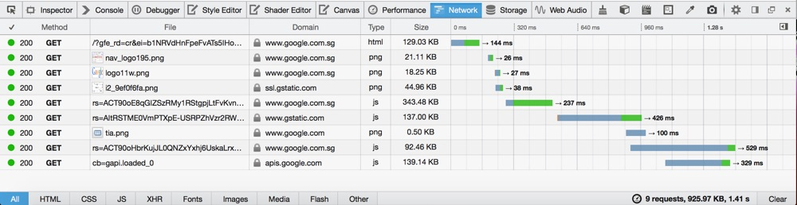

// http://a.com
var win = window.open("http://b.com");
win.postMessage("hello world");
// http://b.com
window.onmessage = function (e) {
if (e.origin !== "a.com") {
return;
}
console.log("received message: ", event.data);
};
A browser makes requests for HTML, CSS, JS, and image files via HTTP.

GET /intdex.html HTTP/1.1
HOST: www.example.com
HTTP/1.1 200 OK
Content-Type: text/html; charset=utf-8
Content-Length: 11
Hello World
How do we create a request after the page has loaded?
JavaScript
Asynchronous JavaScript and XML
Not so much XML anymore.Used for background HTTP requests after the page has loaded.
var xhr = new XMLHttpRequest();
xhr.open('GET', '/cats.jpg');
xhr.onload = function () {
console.log(xhr.response);
};
xhr.send();
HTTP is response/response based.
What if the server has an update for the client?
Poll too much; waste network requests.
Poll not enough; extra latency.
WebSockets allow for bidirectional full duplex communication.
var ws = new WebSocket("ws://a.com");
ws.onopen = function () { console.log("connected"); };
ws.onerror = function (e) { console.error(e); };
ws.onclose = function () { console.log("connection lost"); };
ws.onmessage = function (e) {
console.log("received message:", e.data);
};